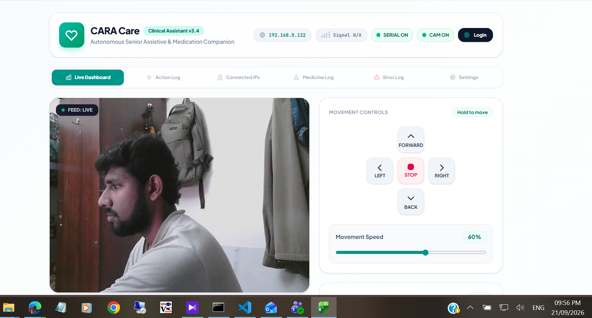
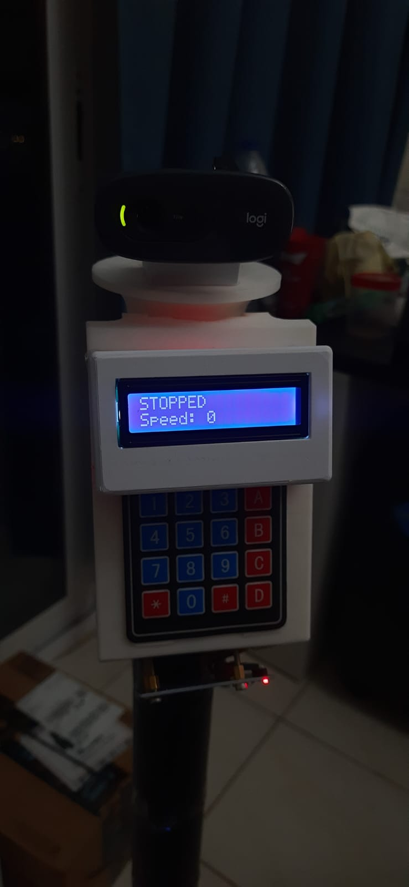
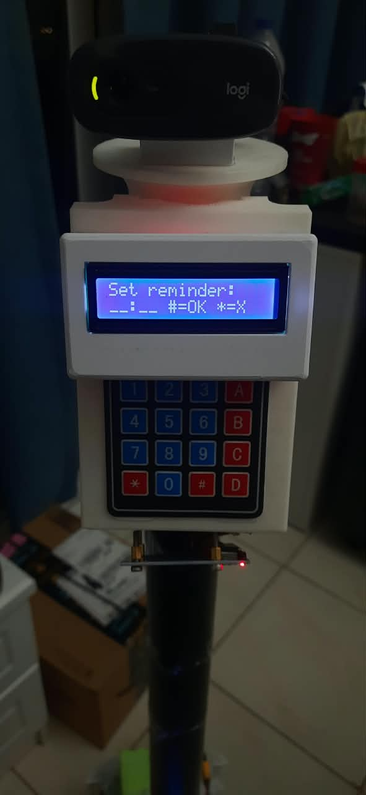
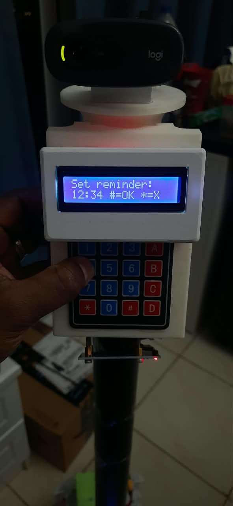
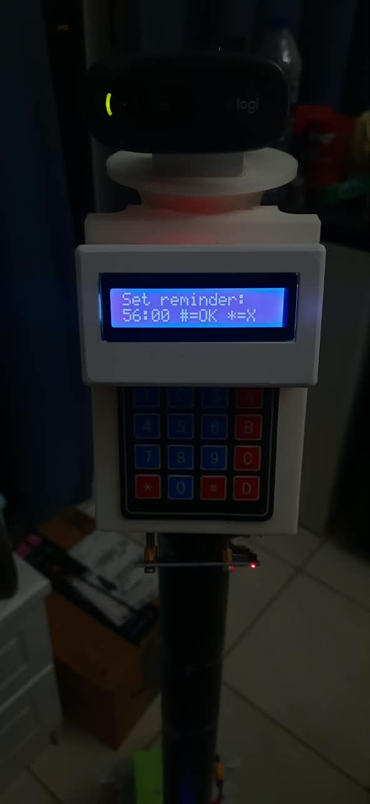
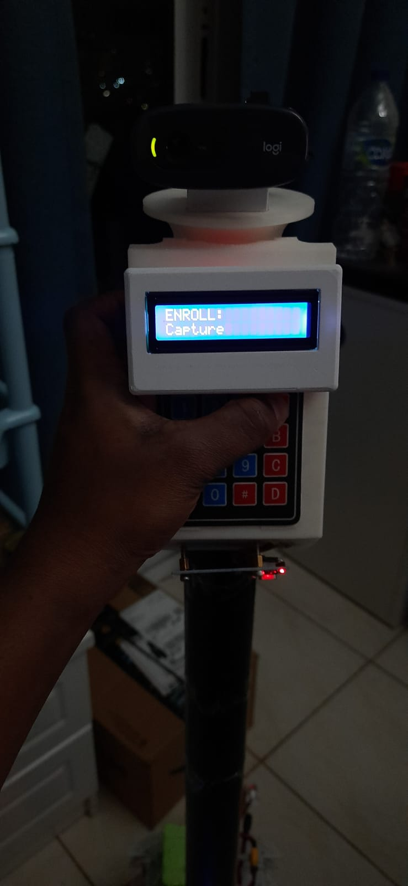
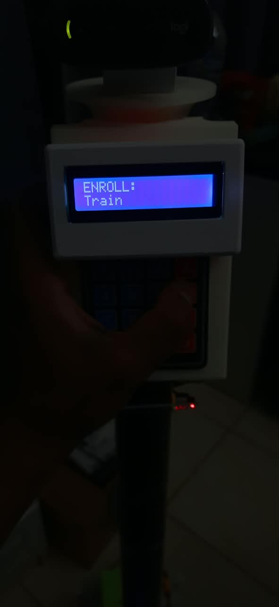
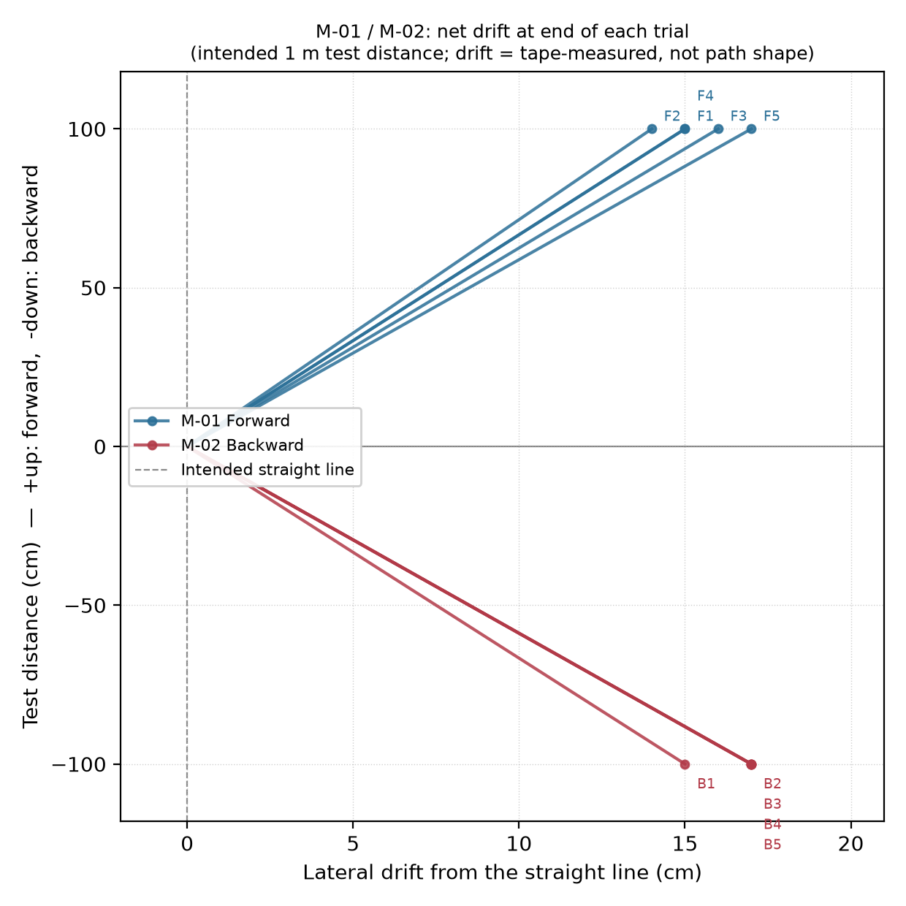

Raw Test Results
Results and evidence from live robot testing (in progress), plus the fall detection confusion matrix and accuracy metrics (labelled Appendix D in the thesis document).
Formal Test Log — Live Robot Testing In progress
The final testing stage follows a 115-test plan covering hardware, perception, motion, fall detection, GSM alerting and the integrated system. Each test has a written procedure and a measurable pass criterion, and is recorded with its actual result and evidence. This page lists only the tests carried out so far; results are transcribed as recorded in the test sheet (updated 23 September 2026), and more are added as testing continues.
Planned
115
Pass
17
Partial
19
Fail
2
Not yet run
77
Stage 1 — Hardware & Component Verification
| ID | Test | Status | Evidence |
|---|---|---|---|
| H-01 | Arduino Mega startup | Pass | Photo |
| H-02 | Jetson Nano boot | Pass | Video |
| H-03 | Camera operation | Pass | Screenshot |
| H-04 | 16×2 LCD operation | Pass | Photo |
| H-05 | 4×4 keypad operation | Partial | 5 photos |
| H-11 | Motor operation | Pass | See M-01/M-02 |
H-01 — Arduino Mega startup Pass
Pass criterion: boot banner READY: cara_main_jetson printed within 5 s, no error lines.
Recorded result: on power-up the LCD shows STOPPED / Speed: 0, which appears only after setup() has completed and the main loop is running. The serial banner itself was not captured (no laptop connected); the LCD photo under H-04 is the evidence.
H-02 — Jetson Nano boot Pass
Pass criterion: boots to a usable prompt in ≤ 2 min; ROS2 workspace and pose-model files load without error.
Recorded result: the connected LCD displayed the assigned IP address, the fan ran and the green power LED came on.
H-03 — Camera operation Pass
Pass criterion: ≥ 15 fps, stable for 5 min, no dropouts.
Recorded result: the camera's live output displays in the CARA Care dashboard on port 5001 (Logitech C720).

H-04 — 16×2 LCD operation Pass
Pass criterion: both lines readable; I2C ACK at 0x27 reported at boot; no garbage characters.
Recorded result: on power-up the display starts and shows the movement status, STOPPED / Speed: 0.

H-05 — 4×4 keypad operation Partial
Pass criterion: every key the firmware uses (0–9, A, B, D, #, *) registers on 10/10 presses; any dead key is listed.
Recorded result: keys 0–6, A and B tested on the fitted keypad. 0 opens the reminder-entry screen; 1–4 and 5, 6, 0, 0 appear correctly on the LCD; A and B show ENROLL: Capture and ENROLL: Train. Keys 7, 8, 9 and C do not register (a dead row). # and * are covered by tests X-01 / X-02, and D was not pressed because it resets patient enrolment.
Consequence: 12 of 16 keys work, so a reminder time containing 7, 8 or 9 (for example 08:00 or 19:00) cannot be entered from the keypad.





H-11 — Motor operation Pass
Pass criterion: all 4 wheels turn in the commanded direction; both sides drive "forward" together (no fighting pair).
Recorded result: confirmed via the M-01 (forward) and M-02 (reverse) motion trials below — all four wheels drove in the commanded direction on every trial, with both L298N channels driven at matching PWM throughout.
Evidence: same runs as M-01/M-02 (22 Sep 2026) — see below.
Stage 2 — Motion & Obstacle Verification
Test space on the day was about 1 m, not the planned 3 m, so each test ran as 5 independent 1 m trials with drift reported as cm/m rather than one longer run.
| ID | Test | Status | Evidence |
|---|---|---|---|
| M-01 | Forward movement | Pass | CSV + 5 videos |
| M-02 | Reverse movement | Partial | CSV + 5 videos |
| N-02 | Rear obstacle detection (incidental) | Partial | CSV rows |
| N-04 | Emergency stop mid-motion (incidental) | Partial | CSV rows |
| M-03 | Left/right turning | Pass | CSV + 6 videos |
| M-04 | Speed control | Partial | CSV + 9 videos |
M-01 — Forward movement Pass
Pass criterion: drives forward 5/5 times; ENC: line shows both sides near the target rpm; lateral drift within 15 cm over 3 m.
Recorded result: 5 of 5 trials drove forward correctly. Lateral drift 14–17 cm over the ~1 m test space (mean ~15.4 cm, ~15 cm/m). Settled left-wheel speed 80–86 rpm against a 78 rpm target (peak 86–88 rpm), settled PWM 103–112. In 2 of the 5 trials the ultrasonic obstacle guard auto-halted the robot mid-run before the manual STOP, because of the confined test space; the other 3 completed on manual STOP.
Logged: run_logs/M01/M01_1_20260922_182615.csv to M01_5_20260922_183059.csv (22 Sep 2026).
M-01 trial 1 — 20260922_182615.mp4
M-01 trial 2 — 20260922_182739.mp4
M-01 trial 3 — 20260922_182830.mp4
M-01 trial 4 — 20260922_182938.mp4
M-01 trial 5 — 20260922_183059.mp4
M-02 — Reverse movement Partial
Pass criterion: drives backward 5/5 times; lateral drift within 15 cm over 3 m.
Recorded result: all 5 trials eventually completed the reverse move. Lateral drift 15–17 cm over the ~1 m space (mean ~16.6 cm, ~17 cm/m). Reversing in the confined space repeatedly triggered the rear obstacle guard in every trial, needing 1–18 repeated backward commands per trial to complete (trial 4 was cleanest — 1 command, 0 blocks). Only trial 4 gave a stable settled-speed reading (89 rpm against an 86 rpm target); the others stopped too early or too often for a stable reading.
Why Partial, not Fail: this is the obstacle-safety system working as designed in a space too small for a clean reverse run, not a control fault. A repeat in open space (≥ 2 m clear behind) is recommended for an uninterrupted reading.
Logged: run_logs/M02/M02_1_20260922_185125.csv to M02_5_20260922_190014.csv (22 Sep 2026).
M-02 trial 1 — 20260922_185120.mp4
M-02 trial 2 — 20260922_185330.mp4
M-02 trial 3 — 20260922_185705.mp4
M-02 trial 4 — 20260922_185846.mp4
M-02 trial 5 — 20260922_190010.mp4
M-01 / M-02 — Summary and Drift Analysis
Across all 10 trials (5 forward, 5 reverse), lateral drift was consistently 14–17 cm regardless of direction of travel — a narrow, repeatable range rather than random scatter. That consistency across both directions points to a small, fixed mechanical bias (for example an alignment or wheel-diameter difference between the left and right side) rather than control noise.

What this diagram is, and isn't: the vertical axis is the intended ~1 m test distance for every trial, not a reconstructed trajectory — it shows net drift at the end of each trial, not the shape of the path actually driven between those two points.
Drift values (cm): M-01 — 15, 14, 16, 15, 17. M-02 — 15, 17, 17, 17, 17.
N-02 — Rear obstacle detection Partial (incidental — not a dedicated test)
Pass criterion: MOVE_BACKWARD refused or halted; back sensors report it.
Recorded result: the rear ultrasonic guard triggered repeatedly during the M-02 reversing trials. Representative readings at the moment of a BLOCKED:MOVE_BACKWARD refusal: rear-right 15.8 cm and 4.5 cm (both within the 20 cm stop threshold); one trial also showed a 0.00 cm rear-left reading (the sensor's "no echo / out of range" convention). Confirms the rear sensors do gate backward movement in practice, though this is incidental evidence captured during M-02, not a dedicated test with a board at a taped, known distance.
From M02_2_20260922_185336.csv (t=15.05s, 15.08s), M02_5_20260922_190014.csv (t=3.57s, 11.92s) — BLOCKED:MOVE_BACKWARD rows.
N-04 — Emergency stop mid-motion Partial (incidental — not a dedicated test)
Pass criterion: emergency stop triggers mid-motion, stopping ≥ 15 cm from the obstacle.
Recorded result: the mid-motion emergency stop fired in 4 of 5 M-02 trials and 2 of 5 M-01 trials while driving in the confined test space, confirming the live obstacle check halts an in-progress move, not just a pre-move refusal. The exact triggering distance wasn't cleanly isolated per event — logged readings around the stop are mixed, some above 20 cm, likely a reading taken between samples — so the stopping behaviour is confirmed but the precise stopping distance is not. A dedicated run (drive at a fixed obstacle, tape-measure the actual stop distance) is recommended for a clean number.
Incidental evidence from the M-01/M-02 logs above; no separate evidence file.
M-03 — Left/right turning Pass
Pass criterion: both directions turn the right way; angle achieved and any stall recorded.
Recorded result: 3 of the planned 5 trials per direction were run (6 total), each held until the robot visually completed a 45° turn rather than for a fixed duration. All 6 trials turned the commanded direction, confirmed by encoder sign (negative on every left trial, positive on every right trial). Wheel RPM stayed in the 14–24 rpm range throughout every trial — low by design (the spin target is deliberately unreachable, so spins run at full PWM) but with no stall to 0 this time, an improvement on the −7 rpm stall seen in Week 15. One right-turn trial was interrupted mid-turn by the ultrasonic obstacle guard in the confined test space; the command was re-sent and the turn completed to 45° afterward.
Logged: run_logs/M03/M03_L1/L2/L3, M03_R1/R2/R3 (23 Sep 2026).
M-04 — Speed control Partial
Pass criterion: measured rpm within ±15% of target after settling; overshoot < 30%.
Recorded result: 3 trials each at 3 commanded speeds (PWM 120, 187, 255), held ~3s. The commanded wheel speed tracked the ramp with no oscillation, but the ~3s hold was too short for the target to fully settle at the higher speeds, so the ±15% settled-error criterion couldn't be cleanly evaluated from this run. All 3 PWM-120 trials were also cut short early by the ultrasonic obstacle guard in the confined test space, same pattern as M-01/M-02.
Why Partial, not Fail: no instability or runaway was observed at any speed — the shortfall is in dwell time, not control behaviour. A longer hold (5–6s) is recommended for a clean settled reading.
Logged: run_logs/M04/M04_120/187/255_1/2/3 (23 Sep 2026).
Stage 2/3 — Person & Band Tracking
Both run stationary, motors off.
| ID | Test | Status | Evidence |
|---|---|---|---|
| P-01 | Single-person detection | Fail | CSV + screenshots |
| B-01 | Close-distance band detection | Fail | CSV + screenshots |
| B-02/B-04 | Band distance variation (mid & bright light) | Partial | CSV + screenshots |
P-01 — Single-person detection Fail
Pass criterion: person detected in ≥ 95% of frames over 60s.
Recorded result: all 3 lighting conditions tested. Mid light: 79.1% lock over 65.8s. Low light: 32.4% lock over 72.3s, with one 31.7s total dropout (16.6s–48.3s) that recovered once brightness was raised — confirmed visually (no face box during the dropout, locked afterward). Bright light: 78.5% lock over 70.8s. None reached the 95% target — bright and mid light perform almost identically, so lighting alone doesn't explain the shortfall.
Logged: run_logs/P01/ (23–24 Sep 2026); screenshots in Evidence/P01/.
B-01 — Close-distance band detection Fail
Pass criterion: band detected ≥ 95% of frames at ~1 m.
Recorded result: 0% band lock at 100cm (the row's ~1m target distance) over 32.8s — never detected once, confirmed visually (no band box in the screenshots at that distance). Also tested at 50cm (65.9% lock, well below target too) and 150cm (0%) — the usable range appears to be under 1m.
Logged: run_logs/B01/ (23 Sep 2026); screenshots in Evidence/B01/.
B-02 / B-04 — Band distance variation Partial
Pass criterion: range where detection ≥ 90%.
Recorded result: tested at 50/100/150cm under both mid and bright light. Mid light: 65.9% / 0% / 0%. Bright light: 51.1% / 82.7% / 0%. Not a simple "brighter is better" — bright light hurts at 50cm (likely overexposure washing out the colour patch, confirmed visually) but substantially helps at 100cm (0% → 82.7%); 150cm fails in both conditions. No distance in either condition reaches the 90% target.
Logged: run_logs/B01/ (mid light, 23 Sep) and run_logs/B04/ (bright light, 24 Sep); screenshots in Evidence/B01/ and snapshot folders.
Stage 15 — Safety & Alert Verification
X-01 — Panic button triggers an alert Pass
Pass criterion: alert starts within 2s, 5/5.
Recorded result: pressing # reliably triggers the alert (buzzer + "HELP IS COMING" LCD message) within ~2s, confirmed repeatedly during bench testing.
No evidence file captured this session (a video is planned for the next session).
X-02 — Acknowledge an alert Pass
Pass criterion: alert clears within 2s on both methods, 5/5.
Recorded result: pressing * silences the alert within ~2s, confirmed repeatedly during the same bench session.
No evidence file captured this session (a video is planned for the next session).
Stage 12 — Medication Reminder Verification
Creation, trigger and acknowledgement, all confirmed live in one screen recording.
| ID | Test | Status | Evidence |
|---|---|---|---|
| MR-01 | Reminder creation | Pass | Video |
| MR-02 | Reminder trigger | Pass | Video |
| MR-03 | Reminder acknowledgement | Pass | Video |
MR-01 / MR-02 / MR-03 — Medication reminder cycle Pass
Pass criteria: MR-01 — reminder stored and listed, survives a restart. MR-02 — LCD shows "MEDICINE TIME!" and buzzer sounds at the set time (±30s). MR-03 — keypad * or the registered RFID tag stops the reminder within 2s.
Recorded result: a reminder was created via the web dashboard (time + label "Med Rmnd Test-01") roughly 2 minutes ahead of the current time — it appeared in the reminder list immediately. At the scheduled time the LCD showed MEDICINE TIME! / Med Rmnd Test-01, well within tolerance. Pressing * while the alert was active cleared it immediately, confirmed by the LCD returning to STOPPED / Speed: 0 — all three captured in one continuous recording.
Video: Evidence/MR-1-2-3/20260924_152510.mp4 (24 Sep 2026).
Stage 18 — Cost Verification
C-01 — Final prototype cost Pass
Pass criterion: total prototype cost ≤ USD 500.
Recorded result: a full 32-item parts list, priced at typical market rates, gives an estimated total of $409.10 — a $90.90 margin under the $500 target. Not yet reconciled against real receipts; the custom 18650 pack's cell count is estimated at 6, pending confirmation against the physical pack.
Source: reports/CARA_Sensor_Cost_List.xlsx.
C-02 — Actual development expenditure Partial
Pass criterion: actual total spend reported separately from the prototype cost.
Recorded result: no receipts collected, so built the same way as C-01 (market-rate estimates) plus the parts that were bought, failed or underperformed and had to be replaced: the original 3S LiPo pack (dead cell, ~$20), the SIM800L GSM module (~$4, 2G-incompatible locally), the original underpowered drive motors (~$10), and the first, unresponsive RFID module (~$3.50) — estimated total ~$446.60.
Source: reports/CARA_Sensor_Cost_List.xlsx. Estimate only, not receipts.
C-03 / C-05 — Battery runtime & voltage log Pass
Pass criterion: runtime ≥ 90 min (NFR4); voltage vs. time recorded.
Recorded result: tracked from a full charge. Voltage stayed above 9.6V through at least 3h35m of operation, then dropped to 0V by roughly 3h55m — well over double the 90-minute target. The exact shutdown minute wasn't pinned down more precisely than that final 20-minute window.
| Elapsed | Voltage |
|---|---|
| 0:00 | 10.81V |
| 0:21 | 10.81V |
| 0:56 | 10.68V |
| 1:44 | 10.50V |
| 3:35 | 9.60V |
| 3:55 | 0.00V |
Evidence: Evidence/Cara Btry life/ (6 timestamped multimeter photos, 24 Sep 2026).
C-04 — Alternative low-cost platform Pass
Pass criterion: Raspberry Pi alternative clearly labelled as not validated.
Recorded result: a Raspberry Pi (4 or 5) could replace the Jetson Nano (currently ~$124.50, the largest single line item), potentially cutting $40–90 off the prototype total and drawing less power. Trade-off: CARA's MediaPipe Pose + RandomForestClassifier pipeline currently uses the Jetson's CUDA GPU; on a Pi it would run CPU-only, likely at a lower frame rate unless the model/resolution is scaled down. Not tested on the actual CARA hardware or software — a paper comparison from published specs only.
Stage 8 — Live Fall Detection Verification (FD-04)
FD-04 — Standardised fall trials Partial
Pass criterion: accuracy ≥ 80% over 20 fall trials + 20 non-fall trials.
Recorded result: 5 of the planned 20 falls tested so far, mid light, all sideways-fall attempts: 4 of 5 correctly triggered FALL_DETECTED (confidence 98.9–100%). The 5th, where the body was side-on to the camera rather than front-facing, only reached 50.7% confidence (POSSIBLE_FALL, never escalated) — a possible early sign the model is weaker on side-on poses, though one trial isn't enough to conclude this confidently. No forward/backward falls or non-fall (ADL) trials logged under this row yet.
Logged: run_logs/FALL/ (5 CSVs); videos in Evidence/FallTests/ (one bandicam recording per trial, 24 Sep 2026, 17:21–17:42).
Fall Detection Results
The offline classifier evaluation below is separate from FD-04's live-robot test above.
Fall-detection evaluation: 129 labelled trials, 61 real falls and 68 non-falls.
Confusion matrix
(61)
(68)
Accuracy
87.6%
113 of 129 correct
Precision
84.6%
55 of 65 alerts were real
Recall
90.2%
55 of 61 falls caught
Cross-validated
89.6%
±4.8%
Note: across 129 total trials, this result (87.6% accuracy) is higher than the ≥80%-across-20-trials figure quoted elsewhere on this site and in the thesis Abstract — that figure was the original target/earlier-draft result and hasn't been reconciled with this more complete run yet. Pulled directly from the thesis document (Appendix D there) — treat as accurate but not yet the final submitted version, and not yet cross-checked against the raw per-trial data for all 15 features.